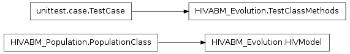

This module implements the SocialNetworkClass class which models the population and the associated social network in out HIV model. It contains the following classes:
| Purpose : | This class constructs and represents the model population |
|---|---|
| Input : |
|
| Attributes : |
|
| Methods : |
_set_population() |
| Purpose : | Determine an agents interal characteristics. |
|---|---|
| Input : | agent : int
|
| Output : | haracteristic : string |
| Purpose : | Return all agents and their characteristics. |
|---|---|
| Output : |
|
| Purpose : | Assess the Drug and Sex type prevalences of the population. |
|---|---|
| Ooutput : | data : dict |
| Purpose : | Return number of IDU, NIDU, and ND users in one array. |
|---|---|
| Output : | data : dict |
Bases: HIVABM_Population.PopulationClass
| Purpose : | This is the core class used to simulate the spread of HIV and drug use in one MSA (Metropolitan Statistical Area). |
|---|---|
| Input : |
SocialNetworkClass : Inherited PopulationClass : Inherited |
| Attributes : |
CleanSyringeUsers : list
All attributes from SocialNetworkClass All attributes from PopulationClass |
| Methods : |
_enter_drug_treatment() _get_partner() All methods from SocialNetworkClass All methods from PopulationClass |
| Purpose : | Update the population. Changes resulting from parsing through the agents and applying the update rules are stored in tmp_agent_dict. This method updates the whole population, i.e., it copies changes from the tmp_agent_dict dictionary and copies it into the Agents dictionary. |
|---|---|
| Input : | none |
| Output : | none |
| Purpose : | Simulate random transmission of HIV between two IDU agents through needle. Needed in _update_IDUand |
|---|---|
| Input : | agents : int partner : int |
| Output : |
| Purpose : | Simulate random transmission of HIV between two agents through Sex. Needed for all users. Sex is not possible in case the agent and assigned partner have incompatible Sex behavior. |
|---|---|
| Input : | agents : int partner : int time : int |
| Output : |
| Purpose : | Simulate transition of drug behavior. The following scenarios are possible: + ND agent might become NIDU when meeting NIDU + NIDU might become IDU when meeting IDU The function is only applied for NIDU and ND users. |
|---|---|
| Input : | agents : int partner : int |
| Output : |
| Purpose : | Let IDU agent interact with a partner. Update IDU agents:
|
|---|---|
| Input : | agent : int partner : int time : int |
| Purpose : | Let NIDU or ND agent interact. |
|---|---|
| Input : | agent : int partner : int time : int |
Output: none
| Purpose : | Account for voluntary Counseling and Testing(VCT) |
|---|---|
| Input : | agent : int partner : int time : int |
| Output : | none |
| Purpose : | Account for SEP (Syringe Exchange Program) for IDU agents. SEP use depends on the year and the functional relationship is given by P(SEP USE (t+1) | IDU) = P(SEP USE (t) | IDU)*f_t(SEP density) where f_t(SEP density) = (1+? + ln(?)) |
|---|---|
| Input : | time : int |
| Output : | bool |
| Purpose : | Account for HIV treatment through highly active antiretroviral therapy (HAART). HAART was implemented in 1996, hence, there is treatment only after 1996. HIV treatment assumes that the agent knows his HIV+ status. |
|---|---|
| Input : | time : int |
| Output : | none |
SocialNetworkClass¶
Bases: HIVABM_Population.PopulationClass
This class inherits from the class PopulationClass. It therefore inherits the population and embeds all agents in a random social network.
Number of agents. Default: 10000
Number of nodes each node is connected to in preferential attachment step
PopulationClass : Inherited
G : networkX graph object pool_of_similar_nodes
repeated_nodes
repeated_nodes_IDU
repeated_nodes_NIDU
repeated_nodes_ND
repeated_nodes_HIV
All attributes from PopulationClass
All methods from PopulationClass
_initialize_network()
_set_assortative_graph()
get_assortative_graph()
visualize_network()
plot_DegreeDistribution()
get_AdjacencyList()
Return the adjacency list of the graph.
Return random assortative graph produced by set_assortative_graph.
Plot the node degree distribution of the graph.
INPUT: networkX graph
Visualize the network using the spring layout (default).
INPUT: networkX graph